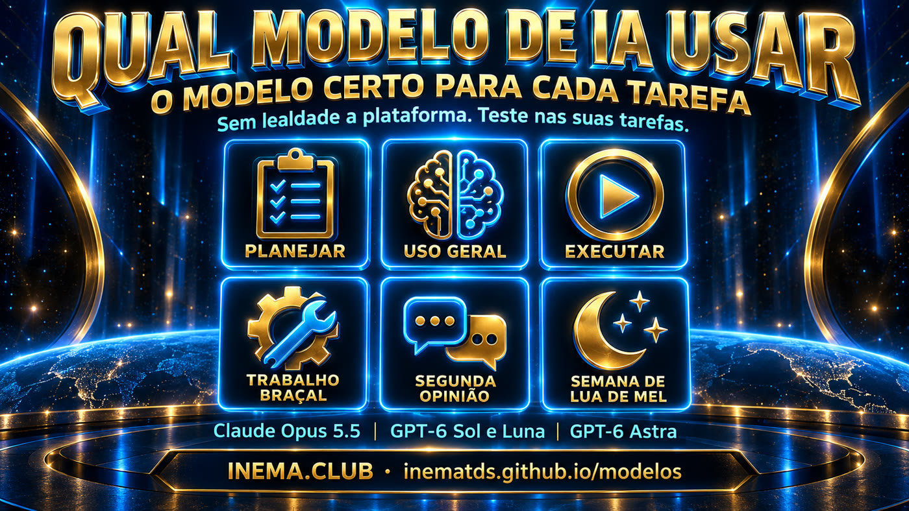

Muitos modelos chegaram de uma vez e é fácil se sentir sobrecarregado. Aqui está, sem jargão, o que cada um faz bem, quando usar e quando evitar.

O melhor para o dia a dia: rápido, direto, econômico em tokens e excelente em projetos complexos.
Pense nele como o profissional sênior que resolve quase tudo com pouca explicação.
O modelo para pensar antes de fazer: planejar, decidir arquitetura e atacar o que é realmente difícil.
Pense nele como o arquiteto: desenha o plano que outro vai executar.
Bom e econômico em tokens, mas abaixo do Astra no que é exigente. Brilha quando a tarefa já está bem definida.
Pense nele como o executor eficiente: segue o plano à risca.
O executor para tarefas repetitivas, claras e sem ambiguidade. Tem dois ritmos: leve e pesado.
Pense nele como o assistente que faz o volume, desde que a instrução seja exata.
Muito capaz, mas consome muitos tokens — e o Opus 5.5 passou a entregar o mesmo ou mais por bem menos.
Pense nele como o consultor caro que você só chama se nada mais resolver.
Experiência ruim nos testes de uso e inferior à versão anterior (4.6).
Se precisar de Grok, o 4.6 era melhor.
O Sonnet 5 gasta demais por tarefa; o Haiku atual é fraco. Dentro do Claude, use o Opus 5.5 em esforço baixo.
O papel deles passou para outros: Luna faz o braçal, Opus em baixo faz o geral.
Quatro papéis, quatro modelos.
Teste os modelos nas suas próprias tarefas.
Cuidado com o efeito lua de mel: modelos novos parecem incríveis nos primeiros dias. Espere uma semana, observe estabilidade, qualidade e custo antes de mudar toda a sua pilha.
Você não está sozinho. Em vez de se perder no ruído dos benchmarks, faça um teste rápido: três tarefas reais suas, dois modelos, o mesmo pedido. Em meia hora você sabe mais do que em um dia lendo comparativos.